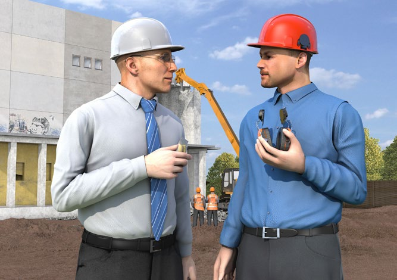

2 Grundlagen für den Arbeitsschutz
2.1 Was für alle gilt!
Von der betriebsärztlichen und sicherheitstechnischen Betreuung über die Unterweisung und Gefährdungsbeurteilung bis hin zur Ersten Hilfe: Wer die Sicherheit und Gesundheit seiner Mitarbeiterinnen und Mitarbeiter systematisch in allen Prozessen berücksichtigt und diese dabei beteiligt, schafft eine solide Basis für einen gut organisierten Arbeitsschutz.
Als Unternehmerin oder Unternehmer sind Sie für die Sicherheit und Gesundheit Ihrer Beschäftigten in Ihrem Unternehmen verantwortlich. Dazu verpflichtet Sie das Arbeitsschutzgesetz. Doch es gibt viele weitere gute Gründe, warum Arbeitssicherheit und Gesundheitsschutz in Ihrem Unternehmen wichtig sein sollten. So sind Beschäftigte, die in einer sicheren und gesunden Umgebung arbeiten, nicht nur weniger häufig krank, sie arbeiten auch engagierter und motivierter. Mehr noch: Investitionen in den Arbeitsschutz lohnen sich für Unternehmen nachweislich auch ökonomisch.
Die gesetzliche Unfallversicherung unterstützt Sie bei der Einrichtung des Arbeitsschutzes in Ihrem Unternehmen. Der erste Schritt: Setzen Sie die grundsätzlichen Präventionsmaßnahmen um, die auf den folgenden Seiten beschrieben sind. Sie bieten Ihnen die beste Grundlage für einen gut organisierten Arbeitsschutz und stellen die Weichen für weitere wichtige Präventionsmaßnahmen in Ihrem Unternehmen.
 Verantwortung und Aufgabenübertragung
Verantwortung und Aufgabenübertragung
Die Verantwortung für die Sicherheit und Gesundheit Ihrer Beschäftigten liegt bei Ihnen als Unternehmerin oder Unternehmer.
Das heißt, dass Sie die Arbeiten in Ihrem Betrieb so organisieren müssen, dass eine Gefährdung für Leben und Gesundheit möglichst vermieden wird und die Belastung Ihrer Beschäftigten nicht über deren individuelle Leistungsfähigkeit hinausgeht.
Diese Aufgabe können Sie auch schriftlich an andere zuverlässige und fachkundige Personen im Unternehmen übertragen. Sie sind jedoch dazu verpflichtet, regelmäßig zu prüfen, ob diese Personen ihre Aufgabe erfüllen. Legen Sie bei Bedarf Verbesserungsmaßnahmen fest. Insbesondere nach einem Arbeitsunfall oder nach Auftreten einer Berufskrankheit müssen deren Ursachen ermittelt und die Arbeitsschutzmaßnahmen angepasst werden.
 Betriebsärztliche und sicherheitstechnische Betreuung
Betriebsärztliche und sicherheitstechnische Betreuung
Unterstützung bei der Einrichtung von sicheren und gesunden Arbeitsplätzen erhalten Sie von den Fachkräften für Arbeitssicherheit, Betriebsärztinnen und Betriebsärzten sowie Ihrem Unfallversicherungsträger. Die DGUV Vorschrift 2 gibt vor, in welchem Umfang Sie diese betriebsärztliche und sicherheitstechnische Betreuung gewährleisten müssen.
 Sicherheitsbeauftragte
Sicherheitsbeauftragte
Arbeiten in Ihrem Unternehmen mehr als 20 Beschäftigte, müssen Sie zusätzlich Sicherheitsbeauftragte bestellen. Sicherheitsbeauftragte sind Mitarbeiterinnen und Mitarbeiter Ihres Unternehmens, die Sie ehrenamtlich neben Ihren eigentlichen Aufgaben bei der Verbesserung der Arbeitssicherheit und des Gesundheitsschutzes unterstützen. Sie achten z. B. darauf, dass Schutzvorrichtungen und -ausrüstungen vorhanden sind und weisen ihre Kolleginnen und Kollegen auf sicherheits- oder gesundheitswidriges Verhalten hin. So geben sie Ihnen verlässliche Anregungen zur Verbesserung des Arbeitsschutzes.
 Qualifikation für den Arbeitsschutz
Qualifikation für den Arbeitsschutz
Wirksamer Arbeitsschutz erfordert fundiertes Wissen. Stellen Sie daher sicher, dass alle Personen in Ihrem Unternehmen, die mit Aufgaben im Arbeitsschutz betraut sind, ausreichend qualifiziert sind. Geben Sie diesen Personen die Möglichkeit, an Aus- und Fortbildungsmaßnahmen teilzunehmen. Die Berufsgenossenschaften, Unfallkassen und die Deutsche Gesetzliche Unfallversicherung bieten hierzu vielfältige Seminare sowie Aus- und Fortbildungsmöglichkeiten an.
 Beurteilung der Arbeitsbedingungen und Dokumentation (Gefährdungsbeurteilung)
Beurteilung der Arbeitsbedingungen und Dokumentation (Gefährdungsbeurteilung)
Wenn die Gefahren für Sicherheit und Gesundheit am Arbeitsplatz nicht bekannt sind, kann sich auch niemand davor schützen.
Eine der wichtigsten Aufgaben des Arbeitsschutzes ist daher die Beurteilung der Arbeitsbedingungen, auch "Gefährdungsbeurteilung" genannt. Diese hat das Ziel, für jeden Arbeitsplatz in Ihrem Unternehmen mögliche Gefährdungen für die Sicherheit und Gesundheit Ihrer Beschäftigten festzustellen und Maßnahmen zur Beseitigung dieser Gefährdungen festzulegen. Beurteilen Sie dabei sowohl die körperlichen als auch die psychischen Belastungen Ihrer Beschäftigten. Beachten Sie Beschäftigungsbeschränkungen und -verbote, z. B. für Jugendliche, Schwangere und stillende Mütter, insbesondere im Hinblick auf schwere körperliche Arbeiten sowie den Umgang mit Gefahrstoffen. Es gilt:
Gefahren müssen immer direkt an der Quelle beseitigt oder vermindert werden. Wo dies nicht vollständig möglich ist, müssen Sie Schutzmaßnahmen nach dem T-O-P-Prinzip ergreifen.
Das heißt, Sie müssen zuerst technische (T), dann organisatorische (O) und erst zuletzt personenbezogene (P) Maßnahmen festlegen und durchführen. Mit der anschließenden Dokumentation der Gefährdungsbeurteilung kommen Sie nicht nur Ihrer Nachweispflicht nach, sondern erhalten auch eine Übersicht der Arbeitsschutzmaßnahmen in Ihrem Unternehmen. So lassen sich auch Entwicklungen nachvollziehen und Erfolge aufzeigen.
 Arbeitsmedizinische Maßnahmen
Arbeitsmedizinische Maßnahmen
Ein unverzichtbarer Baustein im Arbeitsschutz Ihres Unternehmens ist die arbeitsmedizinische Prävention. Dazu gehören die Beteiligung des Betriebsarztes oder der Betriebsärztin an der Gefährdungsbeurteilung, die Durchführung der allgemeinen arbeitsmedizinischen Beratung sowie die arbeitsmedizinische Vorsorge mit individueller arbeitsmedizinischer Beratung der Beschäftigten. Ergibt die Vorsorge, dass bestimmte Maßnahmen des Arbeits- und Gesundheitsschutzes ergriffen werden müssen, so müssen Sie diese für die betroffenen Beschäftigten in die Wege leiten.
 Unterweisung
Unterweisung
Ihre Beschäftigten können nur dann sicher und gesund arbeiten, wenn sie über die Gefährdungen an ihrem Arbeitsplatz sowie ihre Pflichten im Arbeitsschutz informiert sind und die erforderlichen Maßnahmen und betrieblichen Regeln kennen. Hierzu gehören auch die Betriebsanweisungen. Deshalb ist es wichtig, dass Ihre Beschäftigten eine Unterweisung möglichst an ihrem Arbeitsplatz erhalten. Diese kann durch Sie selbst oder eine von Ihnen beauftragte zuverlässige und fachkundige Person durchgeführt werden. Setzen Sie Beschäftigte aus Zeitarbeitsunternehmen ein, müssen Sie diese so unterweisen wie Ihre eigenen Mitarbeiterinnen und Mitarbeiter. Betriebsärztin, -arzt oder Fachkraft für Arbeitssicherheit können hierbei unterstützen. Die Unterweisung muss mindestens einmal jährlich erfolgen und dokumentiert werden. Bei Jugendlichen ist dies halbjährlich erforderlich. Zusätzlich müssen Sie für Ihre Beschäftigten eine Unterweisung sicherstellen
- vor Aufnahme einer Tätigkeit,
- bei Zuweisung einer anderen Tätigkeit,
- bei Veränderungen im Aufgabenbereich und Veränderungen in den Arbeitsabläufen.
 Gefährliche Arbeiten
Gefährliche Arbeiten
Manche Arbeiten in Ihrem Unternehmen sind besonders gefährlich für Ihre Mitarbeiterinnen und Mitarbeiter. Sorgen Sie in solchen Fällen dafür, dass eine zuverlässige, mit der Arbeit vertraute Person die Aufsicht führt. Ist nur eine Person allein mit einer gefährlichen Arbeit betraut, so sind Sie verpflichtet, für geeignete technische oder organisatorische Schutzmaßnahmen zu sorgen, z. B. Kontrollgänge einer zweiten Person, zeitlich abgestimmte Telefon-/Funkmeldesysteme oder Personen-Notsignal-Anlagen. Ihr Unfallversicherungsträger berät Sie dazu gerne.
Zugang zu Vorschriften und Regeln
Machen Sie die für Ihr Unternehmen relevanten Unfallverhütungsvorschriften sowie die einschlägigen staatlichen Vorschriften und Regeln an geeigneter Stelle für alle zugänglich. So sorgen Sie nicht nur dafür, dass Ihre Beschäftigten über die notwendigen Präventionsmaßnahmen informiert werden, Sie zeigen ihnen auch, dass Sie Arbeitssicherheit und Gesundheitsschutz ernst nehmen. Bei Fragen zum Vorschriften- und Regelwerk hilft Ihnen Ihr Unfallversicherungsträger weiter.
Persönliche Schutzausrüstungen
Wenn durch technische und organisatorische Maßnahmen Gefährdungen für Ihre Beschäftigten nicht ausgeschlossen werden können, sind Sie als Unternehmerin oder Unternehmer verpflichtet, ihnen kostenfrei Persönliche Schutzausrüstungen (PSA) zur Verfügung zu stellen. Bei der Beschaffung ist darauf zu achten, dass die PSA mit einer CE-Kennzeichnung versehen ist. Welche PSA dabei für welche Arbeitsbedingungen und Beschäftigten die richtige ist, leitet sich aus der Gefährdungsbeurteilung ab. Vor der Bereitstellung sind Sie verpflichtet, die Beschäftigten anzuhören.
Zur Sicherstellung des Schutzziels ist es wichtig, dass die Beschäftigten die PSA entsprechend der Gebrauchsanleitung und unter Berücksichtigung bestehender Tragezeitbegrenzungen und Gebrauchsdauern bestimmungsgemäß benutzen, regelmäßig auf ihren ordnungsgemäßen Zustand prüfen und Ihnen festgestellte Mängel unverzüglich melden. Die bestimmungsgemäße Benutzung der PSA muss den Beschäftigten im Rahmen von Unterweisungen vermittelt werden. Durch die Organisation von Wartungs-, Reparatur- und Ersatzmaßnahmen sowie durch ordnungsgemäße Lagerung tragen Sie dafür Sorge, dass die Persönlichen Schutzausrüstungen während der gesamten Nutzungsdauer gut funktionieren und sich in hygienisch einwandfreiem Zustand befinden.
Werden in Ihrem Unternehmen PSA zum Schutz gegen tödliche Gefahren oder bleibende Gesundheitsschäden eingesetzt (z. B. Fußschutz, Stech- und Schnittschutz), müssen zusätzliche Maßnahmen beachtet werden. So müssen Unterweisungen zur bestimmungsgemäßen Benutzung dieser PSA praktische Übungen beinhalten. Weitere Maßnahmen können z. B. die Planung und sachgerechte Durchführung von Rettungsmaßnahmen, Überprüfung der Ausrüstungen durch einen Sachkundigen oder die Erstellung von speziellen Betriebsanweisungen betreffen.
Mit Gebotszeichen zur Sicherheits- und Gesundheitsschutzkennzeichnung können Sie die Beschäftigten darauf hinweisen, an welchen Arbeitsplätzen PSA benutzt werden müssen.
Brandschutz- und Notfallmaßnahmen
Im Notfall müssen Sie und Ihre Beschäftigten schnell und zielgerichtet handeln können. Daher gehören die Organisation des betrieblichen Brandschutzes, aber auch die Vorbereitung auf sonstige Notfallmaßnahmen, wie zum Beispiel die geordnete Evakuierung Ihrer Arbeitsstätte, zum betrieblichen Arbeitsschutz. Lassen Sie daher so viele Beschäftigte wie möglich zu Brandschutzhelferinnen und Brandschutzhelfern ausbilden, empfehlenswert sind mindestens fünf Prozent der Belegschaft. Empfehlenswert ist auch die Bestellung einer Mitarbeiterin oder eines Mitarbeiters zum Brandschutzbeauftragten. Das zahlt sich im Notfall aus. Damit Entstehungsbrände wirksam bekämpft werden können, müssen Sie Ihren Betrieb mit geeigneten Feuerlöscheinrichtungen, wie zum Beispiel tragbaren Feuerlöschern, ausstatten und alle Mitarbeiterinnen und Mitarbeiter mit deren Benutzung durch regelmäßige Unterweisung vertraut machen.
 Erste Hilfe
Erste Hilfe
Die Organisation der Ersten Hilfe in Ihrem Betrieb gehört zu Ihren Grundpflichten. Unter Erste Hilfe versteht man alle Maßnahmen, die bei Unfällen, akuten Erkrankungen, Vergiftungen und sonstigen Notfällen bis zum Eintreffen des Rettungsdienstes, eines Arztes oder einer Ärztin erforderlich sind. Dazu gehört zum Beispiel: Unfallstelle absichern, Verunglückte aus akuter Gefahr retten, Notruf veranlassen, lebensrettende Sofortmaßnahmen durchführen sowie Betroffene betreuen. Den Grundbedarf an Erste-Hilfe-Material decken der „Kleine Betriebsverbandkasten“ nach DIN 13157: 2009-11 „Erste-Hilfe-Material - Verbandkasten C“ bzw. der „Große Betriebsverbandkasten“ nachDIN 13169: 2009-11 „Erste-Hilfe-Material - Verbandkasten E“ ab. Zusätzlich können ergänzende Materialien aufgrund betriebsspezifischer Gefährdungen erforderlich sein.
Je nachdem wie viele Beschäftigte in Ihrem Unternehmen arbeiten, müssen Ersthelferinnen und Ersthelfer in ausreichender Anzahl zur Verfügung stehen. Diese Aufgabe können alle Beschäftigten übernehmen. Voraussetzung ist die erfolgreiche Fortbildung in einem Erste-Hilfe-Lehrgang und die regelmäßige Auffrischung alle zwei Jahre (Erste-Hilfe-Fortbildung). Die Lehrgangsgebühren werden von den Berufsgenossenschaften und Unfallkassen getragen. Beachten Sie, dass auch im Schichtbetrieb und während der Urlaubszeit genügend Ersthelferinnen und -helfer anwesend sein müssen.
|
Wie viele Ersthelferinnen und Ersthelfer?
|
| Bei 2 bis zu 20 anwesenden Versicherten |
eine Ersthelferin bzw. ein Ersthelfer
(In jeder Arbeitskolonne muss mindestens ein Ersthelfer vorhanden sein) |
Bei mehr als 20 anwesenden Versicherten
a) in Verwaltungs- und Handelsbetriebe
b) in sonstigen Betrieben |
5 %
10 % |
Regelmäßige Prüfung der Arbeitsmittel
Schäden an Arbeitsmitteln können zu Unfällen führen. Daher müssen die in Ihrem Unternehmen eingesetzten Arbeitsmittel regelmäßig kontrolliert und je nach Arbeitsmittel geprüft werden. Vor der Verwendung eines Arbeitsmittels muss dieses durch Inaugenscheinnahme, ggf. durch eine Funktionskontrolle, auf offensichtliche Mängel kontrolliert werden, die so schnell entdeckt werden können. Neben diesen Kontrollen müssen Sie für wiederkehrende Prüfungen in angemessenen Zeitabständen sorgen. Wie, von wem und in welchen Abständen dies geschehen soll, beschreiben die TRBS 1201 und die TRBS 1203 (siehe Infobox „Rechtliche Grundlagen“). Im Einschichtbetrieb hat sich bei vielen Arbeitsmitteln ein Prüfabstand von einem Jahr bewährt. Die Ergebnisse der Prüfungen müssen Sie mindestens bis zur nächsten Prüfung aufbewahren.
Planung und Beschaffung
Es lohnt sich, das Thema Sicherheit und Gesundheit von Anfang an in allen betrieblichen Prozessen zu berücksichtigen. Wenn Sie schon bei der Planung von Arbeitsstätten und Anlagen sowie dem Einkauf von Arbeitsmitteln und Arbeitsstoffen an die Sicherheit und Gesundheit Ihrer Beschäftigten denken, erspart Ihnen dies (teure) Nachbesserungen.
Barrierefreiheit
Denken Sie auch an die barrierefreie Gestaltung der Arbeitsräume in Ihrem Unternehmen. Barrierefreiheit kommt nicht nur Ihren Mitarbeiterinnen und Mitarbeitern mit Behinderung zugute, Ihre gesamte Belegschaft kann davon profitieren. So können zum Beispiel ausreichend breite Wege oder Armaturen, Lichtschalter und Türgriffe, die gut erreichbar sind, sowie trittsichere Bodenbeläge Unfallrisiken senken und zu weitaus geringeren Belastungen und Beanspruchungen führen.
 Gesundheit im Betrieb
Gesundheit im Betrieb
Gesundheit ist die wichtigste Voraussetzung, damit Ihre Mitarbeiterinnen und Mitarbeiter bis zum Rentenalter beschäftigungs- und leistungsfähig bleiben. Frühzeitige Maßnahmen, die arbeitsbedingte physische und psychische Belastungen verringern helfen, zahlen sich doppelt aus – sowohl für die Beschäftigten als auch für den Betrieb. Dazu gehören die Gestaltung sicherer und gesunder Arbeitsplätze und ein Betriebliches Eingliederungsmanagement (BEM). Auch die Stärkung eines gesundheitsbewussten Verhaltens Ihrer Beschäftigten und die Schaffung gesundheitsförderlicher Arbeitsbedingungen tragen zur Gesundheit Ihrer Beschäftigten bei. Ein Tipp: Ihre Mitarbeiterinnen und Mitarbeiter wissen oft am besten, was sie an ihrem Arbeitsplatz beeinträchtigt. Beziehen Sie sie daher in Ihre Überlegungen für Verbesserungsmaßnahmen mit ein. Das sorgt auch für motivierte Beschäftigte.
Fremdfirmen, Lieferanten und Einsatz auf fremdem Betriebsgelände
Auf Ihrem Betriebsgelände halten sich Fremdfirmen und Lieferanten auf? Hier können ebenfalls besondere Gefährdungen entstehen. Treffen Sie die erforderlichen Regelungen und sorgen Sie dafür, dass diese Personen die betrieblichen Arbeitsschutzregelungen Ihres Unternehmens kennen und beachten.
Arbeiten Sie bzw. Ihre Beschäftigten auf fremdem Betriebsgelände, gilt dies umgekehrt auch für Sie: Sorgen Sie auch in Sachen Arbeitssicherheit für eine ausreichende Abstimmung mit dem Unternehmen, auf dessen Betriebsgelände Sie im Einsatz sind.
Integration von zeitlich befristet Beschäftigten
Die Arbeitsschutzanforderungen in Ihrem Unternehmen gelten für alle Beschäftigten – auch für Mitarbeiterinnen und Mitarbeiter, die nur zeitweise in Ihrem Betrieb arbeiten, wie zum Beispiel Zeitarbeitnehmerinnen und -arbeitnehmer sowie Praktikantinnen und Praktikanten. Stellen Sie sicher, dass diese Personen ebenfalls in den betrieblichen Arbeitsschutz eingebunden sind.
|
Weitere Informationen
|
- Datenbank Vorschriften, Regeln und Informationen der gesetzlichen Unfallversicherung:
► www.dguv.de/publikationen
- Kompetenz-Netzwerk Fachbereiche Prävention:
► www.dguv.de (Webcode: d36139)
- Datenbank der gesetzlichen Unfallversicherung zu Bio- und Gefahrstoffen (GESTIS):
► www.dguv.de (Webcode: d3380)
- Arbeitsschutzgesetz und -verordnungen:
► www.gesetze-im-internet.de
- Technische Regeln zu Arbeitsschutzverordnungen:
► www.baua.de
|
2.2 Was für die Branche gilt
Die Branche Abbruch und Rückbau ist geprägt durch kurze Einsatzzeiten auf häufig wechselnden Baustellen. Dadurch ist eine ständige Anpassung an die jeweiligen Gegebenheiten erforderlich. Dies bedingt eine gute Arbeitsvorbereitung und die Auswahl geeigneter Abbruchverfahren. Aus den Planungsvorgaben des Bauherrn resultieren verschiedenste Anforderungen an die Unternehmen, die jedes Unternehmen einzeln und in Kooperation mit den anderen am Bau Beteiligten bewältigen muss.
Abb. 1 Baustelleneinrichtung und Baustellenbetrieb
|
Arbeitsvorbereitung
|
Ihre Arbeitsvorbereitung ist die Voraussetzung für die Umsetzung des von Ihnen gewählten Arbeitsverfahrens. Gestalten Sie Ihre Arbeitsvorbereitung möglichst detailliert. Sie bildet die Grundlage Ihrer objektbezogenen Gefährdungsbeurteilung.
Prüfen Sie, ob in Ihrem abzubrechenden Objekt besondere Gefährdungen zu erwarten sind. Wählen Sie danach geeignete Maßnahmen und Abbruchverfahren aus.
Beachten Sie ein mögliches Vorhandensein von Kampfmitteln im Abbruchbereich. Lassen Sie sich vor Beginn der Arbeiten eine schriftliche Bestätigung der Kampfmittelfreiheit durch Ihren Auftraggeber vorlegen.
Sehen Sie für das Abbruchverfahren geeignete Maschinen und qualifiziertes Personal vor. Unterweisen Sie Ihr Personal in die Maßnahmen und dokumentieren Sie die
Unterweisung. |
|
Abbruchanweisung
|
Die durch Sie zu erstellende Abbruchanweisung muss die wesentlichen technisch-organisatorischen Informationen zum Arbeitsablauf, die geplanten Maßnahmen zur Arbeitssicherheit und zum Gesundheitsschutz sowie die sich aus den Umweltschutz- und Entsorgungsvorschriften ergebenden Maßnahmen beinhalten.
Schriftliche Abbruchanweisungen sind insbesondere erforderlich bei
- Abbruch mit Großgeräten
- Einziehen
- Demontieren
- Sprengungen
|
|
Standsicherheit und Tragfähigkeit
|
Sorgen Sie dafür, dass die Standsicherheit und Tragfähigkeit von baulichen Anlagen und ihre Teile, Gerüste, Geräte, Hilfskonstruktionen, Laufstege und andere Einrichtungen bei allen Bauzuständen der Abbruch- bzw. Rückbauarbeiten gewährleitstet sind. Sie müssen so bemessen, aufgestellt, unterstützt, ausgesteift, verankert und beschaffen sein, dass sie die Lasten, die bei der vorgesehenen Verwendung anfallen, aufnehmen und ableiten können. Dies gilt insbesondere beim Einsatz von selbstfahrenden Arbeitsmaschinen (z. B. Radlader, Bagger) auf baulichen Anlagen.
Wände von Baugruben und Gräben sind so abzuböschen, zu verbauen oder anderweitig zu sichern, dass sie während der einzelnen Bauzustände standsicher sind. |
|
Gefahrstoffe in der Bausubstanz
|
| Beim Abbruch und Rückbau von Gebäuden und technischen Anlagen können Baumaterialien angetroffen werden, die Gefahrstoffe wie z. B. Asbest, teerstämmige Materialien (Polyzyklische aromatische Kohlenwasserstoffe-PAK), Holzschutzmittelwirkstoffe (PCP, Lindan, DDT) oder polychlorierte Biphenyle (PCB) enthalten. In der Bausubstanz
können auch Kontaminationen aus der industriellen bzw. gewerblichen Nutzung des Objektes, durch Brandschäden oder durch Kriegseinwirkungen (aufgebrochene Kampfmittel) auftreten („kontaminierte Bereiche“). Belastungen resultieren ggf. auch aus biologischen Stoffen, z. B. Schimmelpilzbefall an der Bausubstanz oder Verunreinigungen durch Taubenkot. Bei Tätigkeiten mit Kontakt zu den o. g. Stoffen hat der Auftraggeber besondere Planungs- und Koordinierungsaufgaben. |
|
Baustellenstellenverordnung – Bauherr/in
|
Die Baustellenverordnung weist dem Bauherrn als Veranlasser der Baumaßnahme eine wichtige Mitwirkungspflicht für einen wirksamen Arbeits- und Gesundheitsschutz auf Baustellen zu. Aufgaben des Planers und des Bauherrn sind u. a. eine sorgfältige Planung, Ausschreibung, gewissenhafte Vergabe der Arbeiten sowie Kontrolle der Einhaltung der Arbeitsschutzvorschriften während der Bauausführung.
Der Bauherr hat Ihnen als ausführende Firma vorhandene Bestands- und Statikunterlagen sowie Kenntnisse über die frühere Nutzung der baulichen und technischen Anlagen zur Verfügung zu stellen. Anhand dieser Unterlagen können Sie ein sicheres Abbruch- bzw. Rückbauverfahren wählen. Besondere Mitwirkungspflichten des Bauherrn betreffen, insbesondere Arbeiten in kontaminierten Bereichen, den Umgang mit Gebäudeschadstoffen, Arbeiten mit Asbestbauteilen sowie biologischen Arbeitsstoffen.
Entsprechend der Baustellenverordnung hat der Bauherr zu prüfen, ob ein Sicherheits- und Gesundheitsschutzkoordinator bzw. -koordinatorin (SiGeKo) zu bestellen ist. Mit der Beratung des Bauherrn/Planers stellt der SiGeKo bereits in der Planungsphase die Einhaltung der Vorschriften des Arbeits- und Gesundheitsschutzes sicher. In der Ausführungsphase organisiert er eine reibungslose Zusammenarbeit der bauausführenden Unternehmen mit dem Ziel, gegenseitige Gefährdungen auszuschließen. Beachten Sie deshalb den Sicherheits- und Gesundheitsschutzplan sowie die Hinweise des SiGeKo. |
|
Leitung, Aufsicht und Mängelmeldung
|
Sorgen Sie dafür, dass die Abbrucharbeiten von fachlich geeigneten Personen geleitet werden.
Setzen Sie für die Beaufsichtigung der Arbeiten weisungsbefugte Personen (Aufsichtführende) ein.
Aufgabe der aufsichtführenden Person ist es unter anderem, die Arbeiten zu beaufsichtigen und für die sicherheitsgerechte Ausführung zu sorgen.
Veranlassen Sie, dass Ihre Beschäftigten festgestellte sicherheitstechnische Mängel unverzüglich dem Aufsichtführenden melden, sofern diese die Mängel nicht selbst beseitigen können. |
|
Koordinierung zwischen Unternehmen
|
| Arbeiten Sie mit anderen Unternehmen zusammen, haben Sie sich mit diesen hinsichtlich des Arbeitsschutzes abzustimmen. Sie haben zur Vermeidung gegenseitiger Gefährdungen eine geeignete Person zu bestimmen, die die Arbeiten aufeinander abstimmt. Statten Sie diese Person mit einer entsprechenden Weisungsbefugnis aus. |

Abb. 2 Koordination unterstützt eine erfolgreiche Projektabwicklung und bringt Erfolg
|
Baustelleneinrichtung und Baustellenbetrieb
|
Richten Sie die Baustelle ein und sorgen Sie für einen sicheren Baustellenbetrieb. Zur Baustelleneinrichtung können z. B. gehören:
- Baustellenunterkunft, Pausen- und Sanitärräume
Informieren Sie sich, ob gemeinsam nutzbare Baustellenunterkünfte, Pausen- und Sanitärräume vorhanden sind. Ansonsten organisieren Sie selbst deren Bereitstellung und planmäßige Reinigung.
- Planung von Notfallmaßnahmen
Planen Sie neben den allgemeinen Maßnahmen zur Ersten Hilfe auch die Rettung von hochgelegenen und unter der Erdgleiche liegenden Arbeitsplätzen. Dies kann z. B. mittels Zugang über Treppen, Schleifkorbtragen (kranbare Trage), Ausrüstungen zum Retten aus Höhen und Tiefen (Rettungssysteme) erfolgen. Stellen Sie sicher, dass ein Aushang zur Ersten Hilfe vorhanden ist und informieren Sie sich, wo sich die nächste Ärztin oder der nächste Arzt bzw. das nächste Krankenhaus befindet. Es hat sich bewährt, das betriebliche Notfallkonzept bei Großbaustellen mit der zuständigen Feuerwehr abzustimmen und diese gegebenenfalls auch bei Übungen zu beteiligen.
- Sichere Aufstellung der Großgeräte, Hebezeuge
Achten Sie bei der Aufstellung auf die Tragfähigkeit des Untergrundes und auf die Einhaltung der Sicherheitsabstände zu Baugruben und zu Bauwerken.
- Geeignete Baustromversorgung
- Einhaltung der verkehrsrechtlichen Anordnung bei Bauarbeiten im öffentlichen Verkehrsraum
- Weisen Sie gegebenenfalls die Bauherrin bzw. den Bauherrn auf eine wirksame Absperrung der Baustelle hin, um Arbeitsbereiche vom öffentlichen Straßenverkehr zu trennen und um Unbefugten den Zugang zu verwehren.
Zum sicheren Baustellenbetrieb gehören z. B.:
- Einsatz geeigneter und geprüfter Arbeitsmittel
- Aufrechterhaltung der Verkehrssicherheit
Organisieren Sie z. B. die sichere Materialanlieferung, Lagerung und fachgerechte Entsorgung, die Einhaltung der verkehrsrechtlichen Anordnung oder die Vermeidung von Stolper- und Sturzgefahren durch temporäre Bodenabdeckungen.
- Ausreichende Arbeitsplatz-Beleuchtung
- Sichere Arbeitsplätze und Verkehrswege
Erkundigen Sie sich z. B., wer im Winter die Räum- und Streuverpflichtung hat, wer für die Erhaltung der Absturzsicherung oder wer für den Austausch der allgemeinen Beleuchtung zuständig ist.
Treppen, Aufzüge oder Transportbühnen sind geeignete Arbeitsmittel zum Erreichen von hochgelegenen Arbeitsplätzen.
Sorgen Sie für geeignete Absperrungen sowie die Kennzeichnung und Sicherung von Gefahrenbereichen.
- Flucht- und Rettungswege
Achten Sie darauf, dass die Flucht- und Rettungswege immer freigehalten und Abfälle sofort in geeignete Behältnisse entsorgt werden.
- Brand- und Explosionsschutz
Legen Sie Maßnahmen für den Fall des Entstehens von Bränden, von Explosionen, des unkontrollierten Austretens von Stoffen und von sonstigen gefährlichen Störungen des Betriebsablaufs fest.
Lassen Sie sich zwingend vor Beginn der Arbeiten eine schriftliche Bestätigung der Kampfmittelfreiheit durch Ihren Auftraggeber vorlegen.
- Führen Sie nach Möglichkeit die Abbrucharbeiten staub-, lärm- und vibrationsarm nach dem Stand der Technik aus. Zur Staubreduzierung verwenden Sie abgesaugte Maschinen und/oder geeignete Staubbindeverfahren.
|
|
Witterungseinflüsse
|
Schützen Sie Ihre Beschäftigten vor extremen Temperatureinflüssen, Durchnässung und vor stärkerer solarer UV-Strahlung. Sorgen Sie dafür, dass witterungsgerechte Arbeitskleidung getragen wird bzw. nach Gefährdungsbeurteilung geeignete Wetterschutzkleidung (Regen, Kälte) auch zur Verfügung gestellt wird.
In den Monaten April bis September ist insbesondere an sonnigen Tagen UV-Schutz notwendig. Sofern keine Überdachung der Arbeitsplätze möglich ist, achten Sie darauf, dass vor allem Augen, Kopf, Nacken, Schultern und Arme der Beschäftigten durch Kopfbedeckungen, Textilien und Sonnenbrille ausreichend geschützt sind. Für Hautregionen, die nicht mit Textilien bedeckt werden können, ist Sonnencreme mit hohem Lichtschutzfaktor zu verwenden.
An heißen Tagen kann die Belastung durch hohe Temperaturen z. B. durch folgende Maßnahmen reduziert werden:
- ausreichend Flüssigkeit zu sich nehmen,
- schattige Pausenplätze nutzen,
- Anpassung der Arbeitszeit, der Arbeitsanforderungen und der Pausenregelungen, z. B. durch Verlegen der Arbeiten aus der Mittagszeit auf andere Tagesabschnitte.
|
| |
|
Eine große Auswahl an Arbeitshilfen und Formularen sowie Vorlagen für z. B. Prüfprotokolle sind auf den Internetseiten der BG BAU zu finden. siehe http://www.bgbau-medien.de |